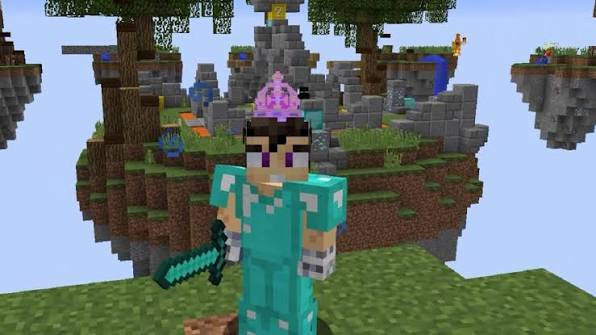
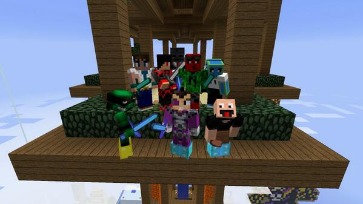
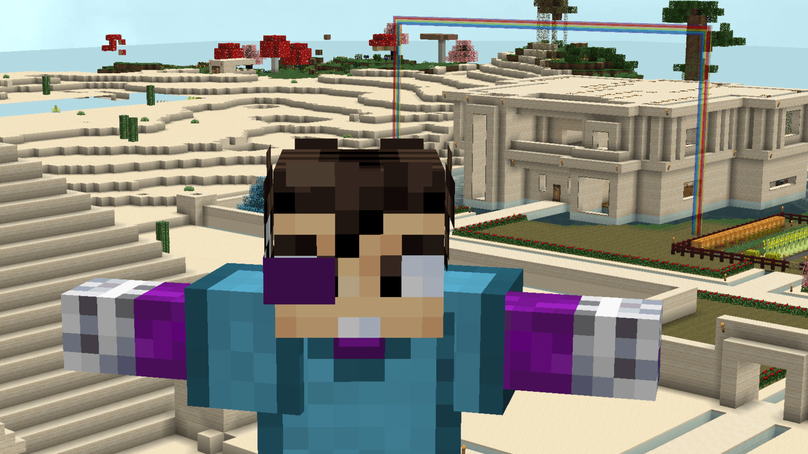
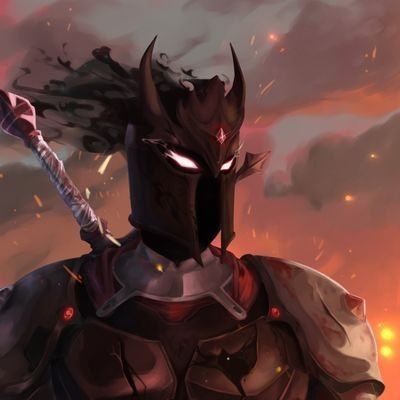
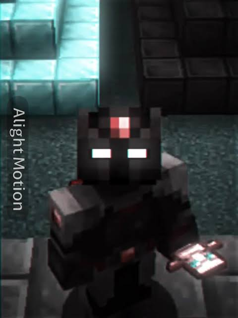
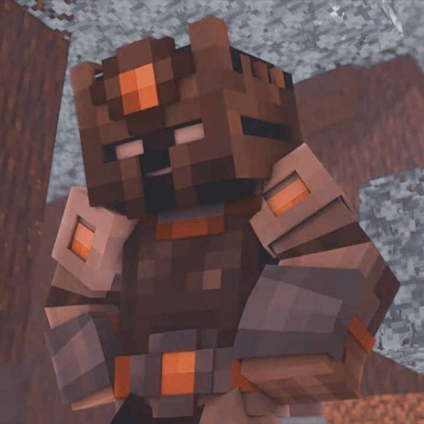

Recomiendo
Los recomiendo porque cada uno tiene una forma diferente y entretenida de jugar Minecraft. Sus videos combinan aventuras, retos, humor y creatividad, por lo que siempre hay contenido interesante para ver y también se pueden aprender nuevas cosas sobre el juego.
Vegetta777
Vegetta777, cuyo nombre es Samuel de Luque, es un creador de contenido español conocido principalmente por sus gameplays y series de Minecraft. A lo largo de los años ha creado muchas series de supervivencia, aventuras y mundos con mods, además de colaborar con otros YouTubers como Willyrex. Actualmente su canal supera los 34 millones de suscriptores.




Recomiendo a Vegetta777 por su contenido relacionado con Minecraft y sus series.
Visitar canalElRichMC
ElRichMC es un creador español especializado especialmente en Minecraft técnico. Su contenido suele profundizar más en las mecánicas del juego: granjas automáticas, redstone, supervivencia avanzada, versiones y novedades de Minecraft. También ha organizado proyectos conocidos como EliteCraft, UHC España y Permadeath.

.jfif)
.jfif)
.jfif)
Recomiendo a ElRichMC para las personas que quieren conocer Minecraft a mayor profundidad.
Visitar canalFarfadox
Farfadox es un creador de contenido argentino conocido por sus videos de Minecraft y otros videojuegos. Su contenido tiene un enfoque más humorístico y suele incluir mods, retos, servidores y series como Farfalands. También ha participado en proyectos y eventos relacionados con Minecraft, incluyendo EliteCraft y Squid Craft Games.




Recomiendo a Farfadox por su manera divertida de jugar Minecraft.
Visitar canal